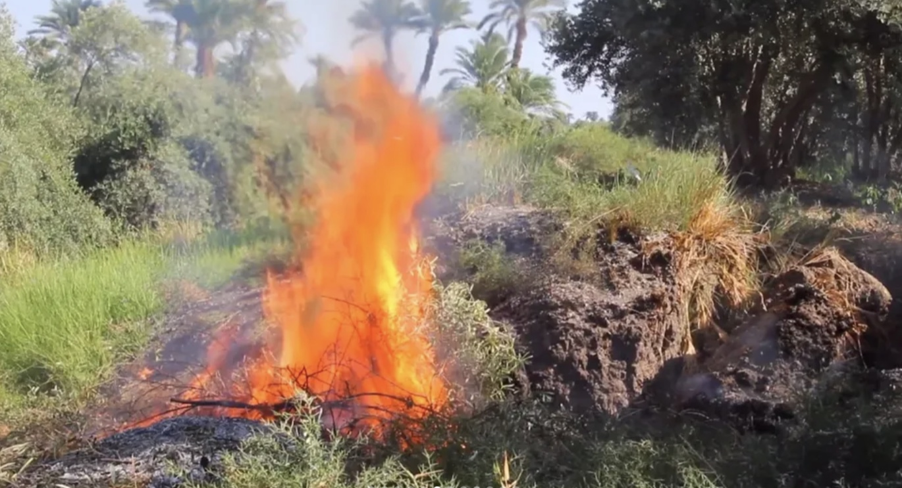

فيلم وثائقي مشترك · 2025 · 41:23
سينما وفن القاهرة، مصر
صانعة أفلام مصرية وفنانة متعددة التخصصات

فيلم وثائقي مشترك · 2025 · 41:23

فيلم وثائقي قصير · 2025 · 05:48

فيلم وثائقي مشترك · 2023 · 29:53

فيلم وثائقي قصير · 2025 · 14:45

فيلم وثائقي قصير · 2023 · 13:15
فيلم وثائقي مشترك · 2025 · 41:23 دقيقة
مدة العرض 41:23 دقيقة
من قلب القاهرة، يسعى نبيل وسمية، اللذان لا يعرف أحدهما الآخر، إلى تحقيق أحلام تنبع من حبهما للطعام. ورغم اختلاف مساريهما، تتردد أصداء حكاية كل منهما في حكاية الآخر. وبين الطموح والظروف، ترسم الذكريات والتضحيات ومن حولهما ملامح رحلتيهما.


فيلم وثائقي قصير · 2025 · 05:48 دقيقة
مدة العرض 05:48 دقيقة
«أكل الشارع» لمحة عن الحياة النابضة في شوارع القاهرة، حيث يشكّل الطعام نبض المدينة. ومن خلال الباعة والطهاة ومن يجتمعون حول وجباتهم، يرصد الفيلم نكهات القاهرة وحيويتها وروابطها اليومية التي شكّلها الصمود والتكاتف.


فيلم وثائقي مشترك · 2023 · 29:53 دقيقة
في عالم يتسارع إيقاعه، خصوصًا في المدن الكبرى، تحيط بنا الأشياء المصنوعة ونزداد انغماسًا فيها. وبين الحين والآخر، يحالفنا الحظ فنخفّض الضجيج ونقف أمام الطبيعة، أعظم الفنانين. فهي تذكّرنا بما هو حقيقي وطبيعي وسط الصخب. يدعونا الفيلم إلى تأمّل جمال الطبيعة في المدينة، واكتشاف قدرتها على الحضور رغم التمدّد العمراني، واستعادة صلتنا بها. فكما تثير منجزات الإنسان إعجابنا، تستحق الطبيعة أيضًا أن نحتفي بها.


فيلم وثائقي قصير · 2025
مدة العرض 14:45 دقيقة
تحاول أميرة، الشابة شديدة التعلّق بجدّتها، التعايش مع رحيلها. نشأت علاقتهما في مطبخ الجدّة، حيث كانتا تطهوان وتتشاركان الطعام. وبعد أن فقدت حبّ جدّتها الغامر، تشعر أميرة بالضياع وتشتاق إليها بشدّة. وبينما تعيش حزنها وتبحث عن الحب في من حولها، ومنهم أمّها، وفي داخلها أيضًا، تبدأ في اكتشاف ما قد يساعدها على المضيّ قدمًا رغم الألم.


فيلم وثائقي قصير · 2023 · 13:15 دقيقة
فيلم وثائقي قصير عن هدر الطعام عبر سلسلة الإمداد الغذائي وعلاقته بتغيّر المناخ والجوع.



مختارات من أعمال أميرة في التصوير الفوتوغرافي
يوميات أميرة البصرية على إنستغرامأميرة عبد الفضيل صانعة أفلام ومصوّرة وكاتبة وفنانة بصرية تقيم في القاهرة. درست الإذاعة والتلفزيون في جامعة أكتوبر للعلوم الحديثة والآداب.
تستكشف أفلامها الوثائقية موضوعات العائلة والطعام والبيئة. ويشمل عملها أيضًا الإعلام الرقمي والمونتاج وتطوير السيناريو وتنسيق الفعاليات والتعليم.